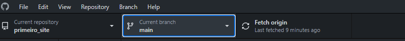
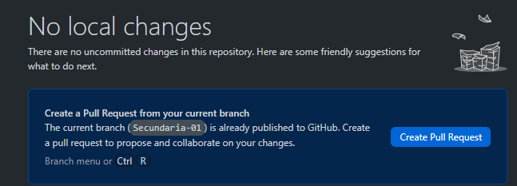
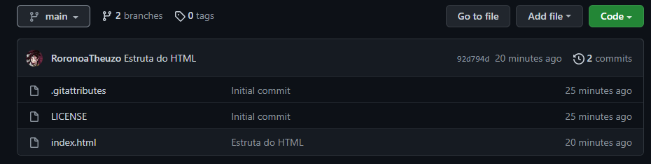
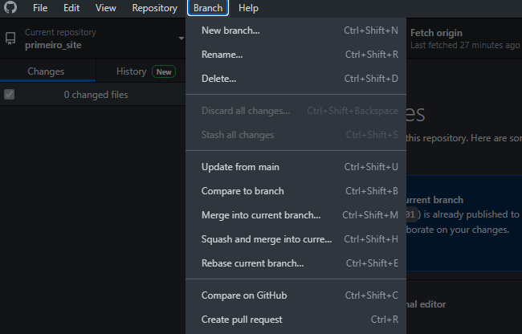
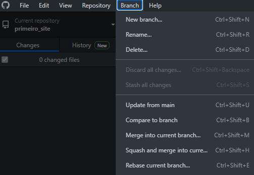
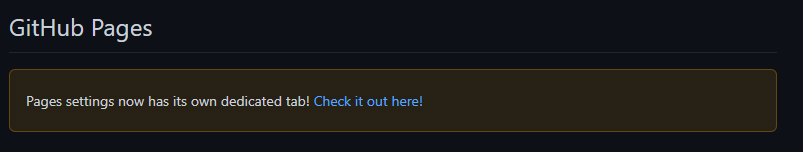
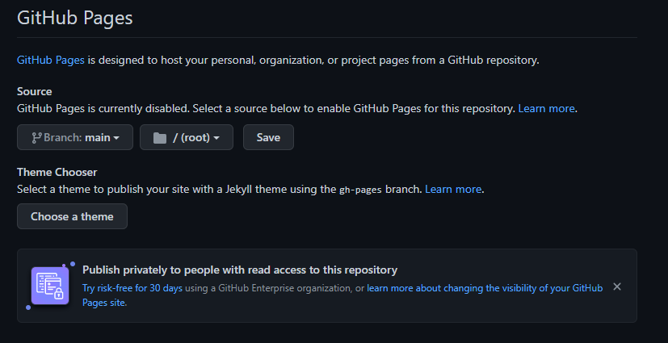

Branches
Branch é uma ramificação no git é um ponteiro para as alterações feitas nos arquivos do projeto. É útil em situações nas quais você deseja adicionar um novo recurso ou corrigir um erro, gerando uma nova ramificação garantindo que o código instável não seja mesclado nos arquivos do projeto principal.
Branch master ou main
"Braço" principal de um projeto em um repositório determinado, ele é quem dá início no projeto, passando assim pelo commit.
Branch secundária
"Braço" secundário de um projeto em um repositório determinado, no caso, as branch trabalham em equipe para melhor desempenho do projeto e futuras melhorias realizadas pelo funcionário.
Branch no GitHub
Vamos localizar a Branch no GitHub, abra o seu GitHubDesktop e crie seu repositório, faça seu projeto normalmente, você pode notar que na parte superior vão ter três retângulos, o primeiro é o "Currenty Repository", onde contém o nome do seu repositório atual, no segundo
está o "Current Branch" e abaixo vai estar escrito "Main" (Como mostrado na foto exemplo), é nesse retângulo onde podemos alterar, selecionar e criar as nossas Branchs.

Como criar uma Branch
Clique no retângulo da Branch e na parte direita vai estar a opção "New Branch", lá você pode escolher o nome que desejar para sua Branch.
PS: Não esqueça de dar "Create Pull Request" na sua Branch, se não, não vai alterar em nada. Também é possível criar uma Branch a partir de outra.

No site do GitHub, ele mostra quantas Branchs nos temos e também podemos alterar elas.

Você pode perceber parecem que são 2 pastas totalmente diferentes, porém, com a cópia dos arquivos, você pode manipulalos da maneira que quiser.
PS: Tudo oque você alterar na Branch secundária e der o "Push Origin" vai ser alterada na Branch secundária apenas, por isso, fique atento!
Também existe o "Merge", ele vai utilizar o braço correto, um exemplo mais direto, linkar a secundária com a main, vai sincronizar as duas como na imagem de exemplo.

Pode ser que haja um conflito quando for utilizar o "Merge", isso acontece devido as mudanças que estão sendo realizadas.
Você pode manter totalmente atualizado, através da opção "Update to main".

Hospedagem
O GitHub pages oferece uma hospedagem gratuita para o seu site e repositório, para isso, você deve criar uma conta e um repositório público. Link para o GitHub Pages.

Basta ir em "Settings" e rolar a página até achar a opção da foto.
Logo após, você pode selecionar a Branch que deseja hospedar o site e assim o site será hospedado no domínio do GitHub.
